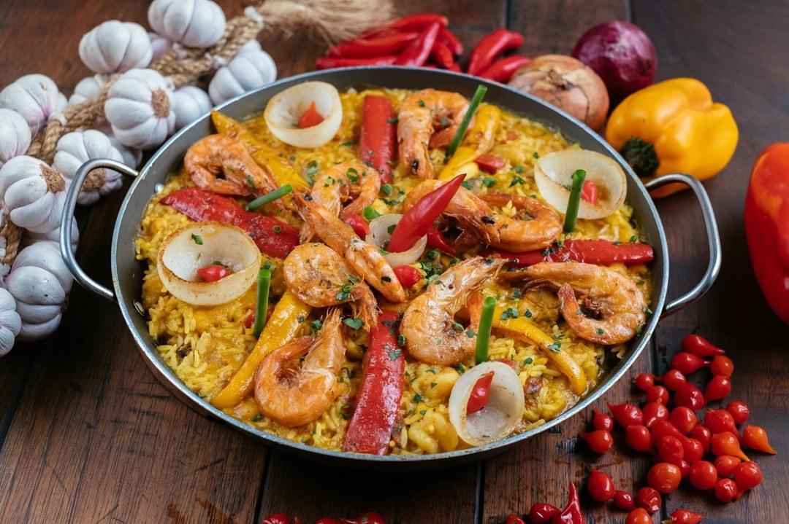
01
SUGESTÃO DO CHEFE
Paella de frutos do mar
Colorida, generosa e feita para chegar no centro da mesa.
Uma casa de alma rústica e elegante, onde carnes, frutos do mar, pizzas e bons encontros dividem a mesma mesa.
O Talavera combina gastronomia, arquitetura acolhedora e uma atmosfera que muda de ritmo ao longo da noite.
Área interna climatizada, espaços externos, música ao vivo, espaço kids, valet e estrutura para celebrações sociais ou corporativas. Uma experiência completa, pensada para reunir boa gastronomia, conforto e hospitalidade em cada ocasião.
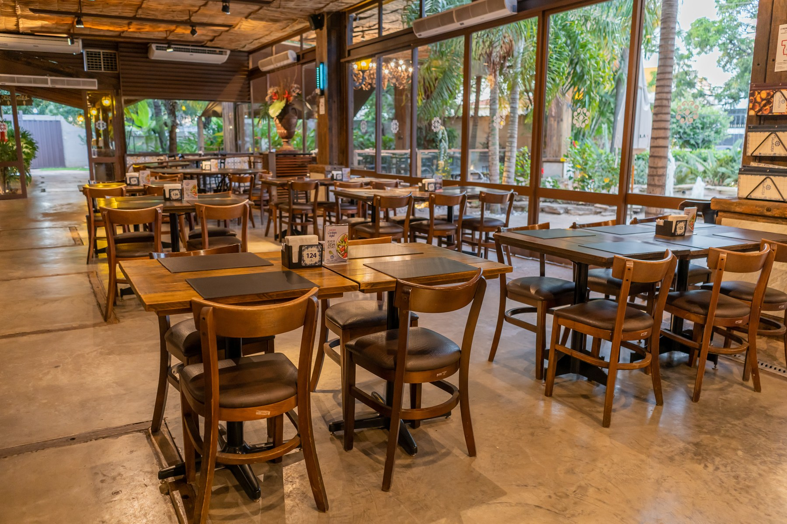
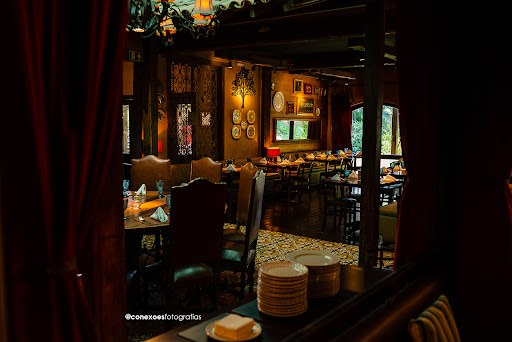

Colorida, generosa e feita para chegar no centro da mesa.
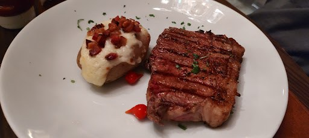
Grelha, ponto certo e uma apresentação que não precisa gritar.
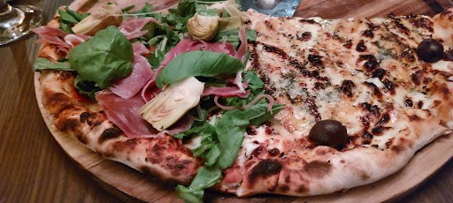
Massa fina, forno quente e combinações criadas para compartilhar à mesa.
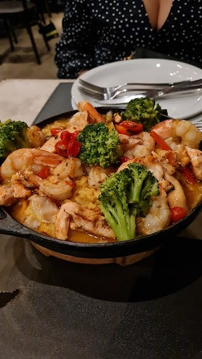
Frutos do mar, legumes e pratos generosos com identidade brasileira.
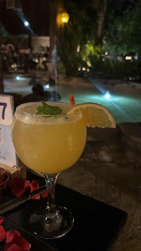
Clássicos e autorais para acompanhar o ritmo da noite.
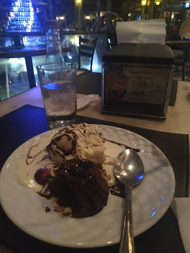
Chocolate, cremosidade e sabores pensados para encerrar a experiência com delicadeza.
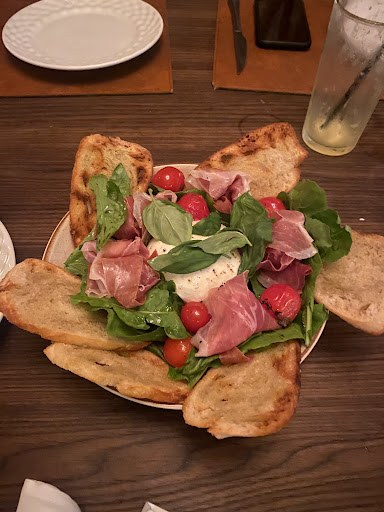
Do encontro casual ao evento planejado, o espaço acompanha a ocasião sem perder o clima da casa.
Arraste para explorar os espaços da casa e conhecer diferentes atmosferas do Talavera.
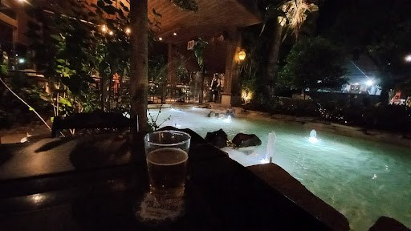
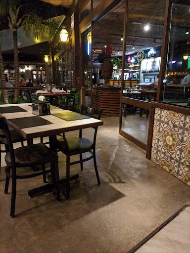
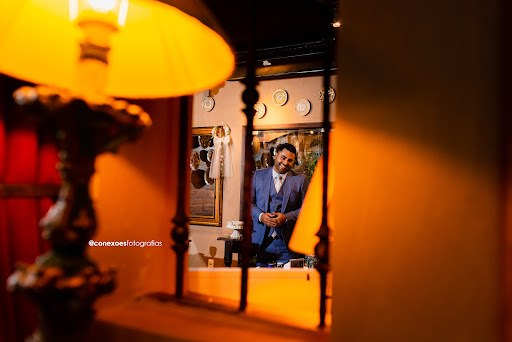
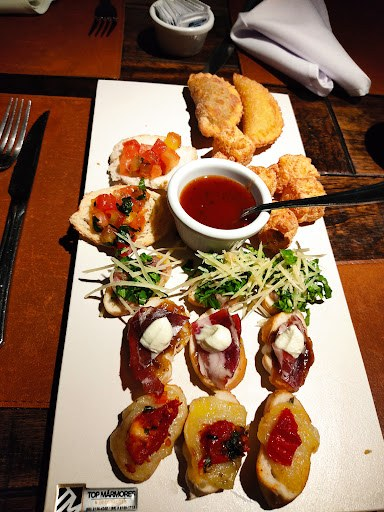
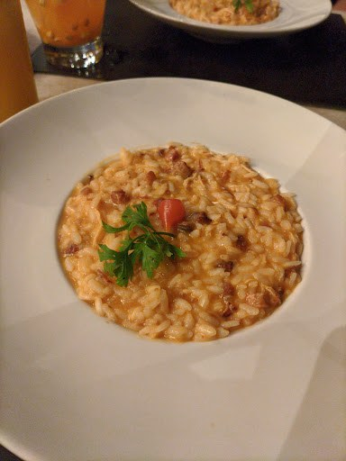
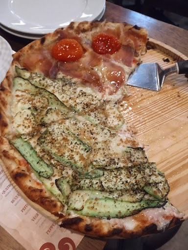
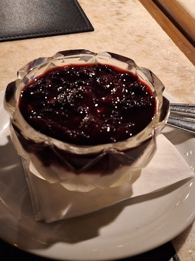
Av. José Rodrigues do Prado, 40
Santa Rosa • Cuiabá - MT
Seg a sáb • 18h às 01h
Dom • 18h às 00h
Sáb e dom • 11h30 às 16h30
Feriados • 11h30 às 16h30
(65) 99923-7100
Ligar agora